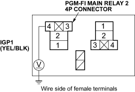

If you suspect a problem with the fuel pump, check that the fuel pump actually runs; when it is ON, you will hear some noise if you listen to the fuel fill port with the fuel fill cap removed. The fuel pump should run for 2 seconds when the ignition switch is first turned on. If the fuel pump does not make noise, check as follows:
- Turn the ignition switch OFF.
- Remove the glove box (see page 20-79), then remove the PGM-FI main relay 2 (A).

RHD model:

- Turn the ignition switch ON (II).

- Measure voltage between the PGM-FI main relay 2 4P connector terminal No. 4 and body ground.

Is there battery voltage?
YES - Go to step 5.
NO - Repair open in the wire between the PGM-FI main relay 1 and the PGM-FI main relay 2. 
- Measure voltage between the PGM-FI main relay 2 4P connector terminal No. 1 and body ground.

Is there battery voltage?
YES - Go to step 6.
NO - Repair open in the wire between the under dash fuse/relay box and PGM-FI main relay 2.
- Turn the ignition switch OFF.
- Disconnect ECM connector E (31P).